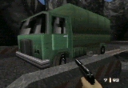
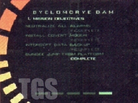

|
.
| Goldeneye
Version Beta : Dam / Barrage |
| Le
Barrage reste le Niveau qui a subi pas mal de changements. Au Départ,
il devait etre trop compliqué pour un Premier Niveau. Ci-dessous,
Première Photo : le Camion Vert. Au Départ, on devait
l'exploser, c'était un Objectif. Dedans se trouvait l'Elastique
vous servant à sauter. Le Camion reste là, et sert maintenant
de "Guide" pour vous amener dans la Suite du Niveau, aux
Portes Coulissantes. La Deuxième Image nous montre la Montre
de Bond, et on voit que le Dernier Objectif (sauter) est completé.
Mais comment peut-on réussir cet objectif et continuer à
jouer dans le Barrage ?! Ca n'a pas de sens !! Et bien en fait, on
devait sauter, puis entrer dans le Conduit menant à Facility
! |

